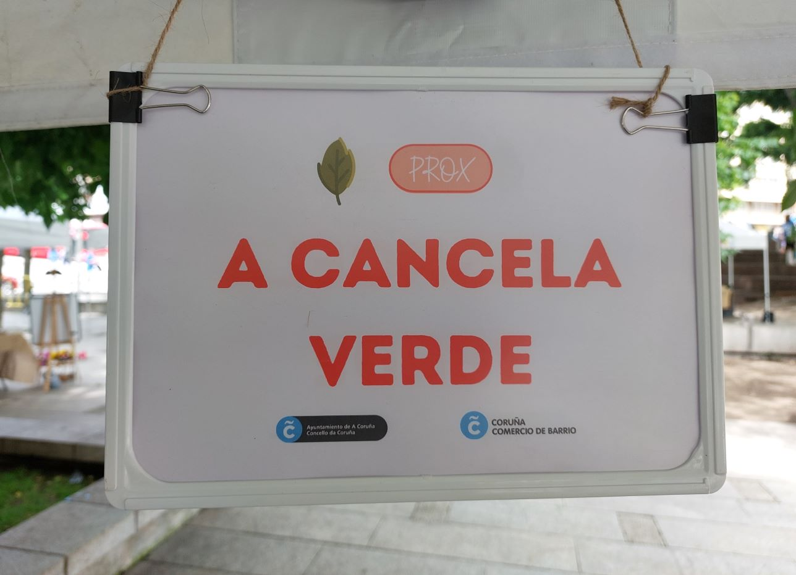
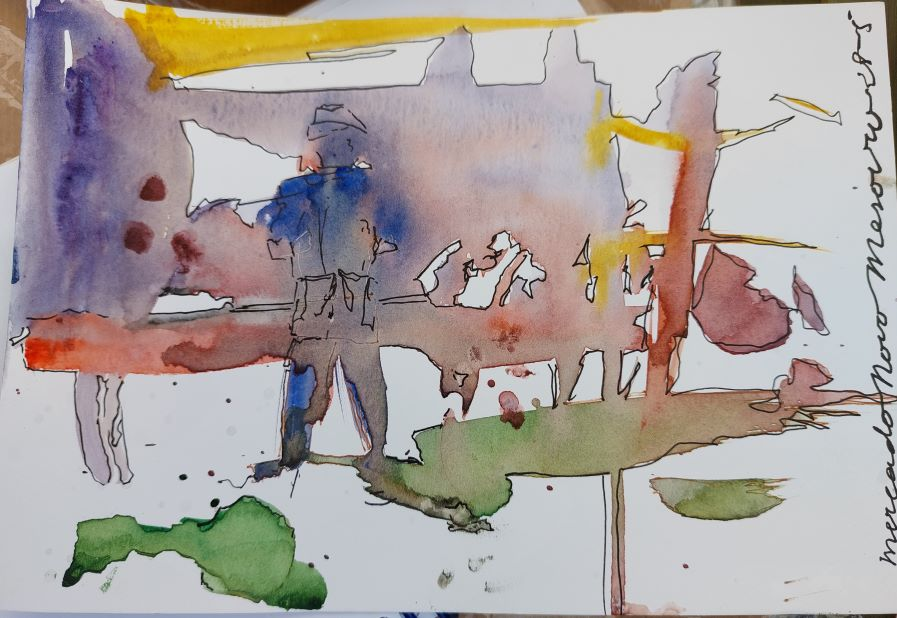
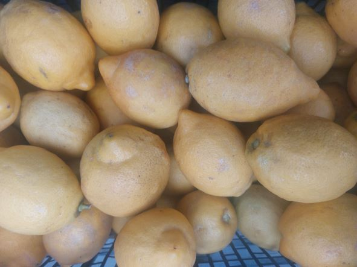
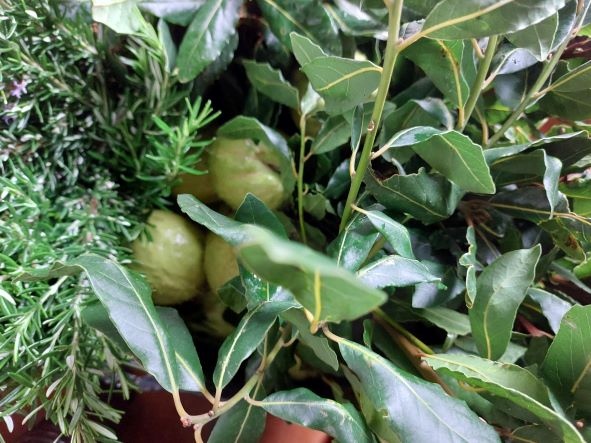
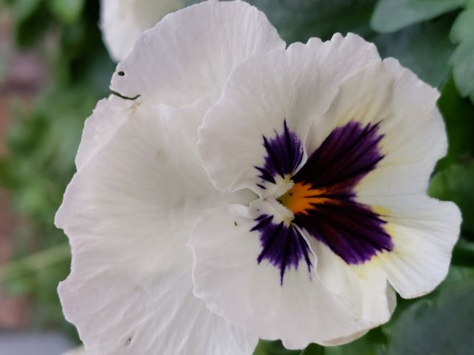
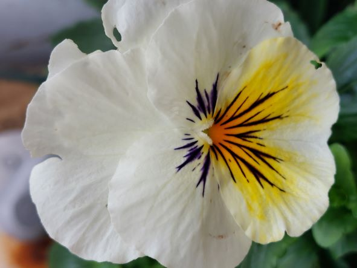
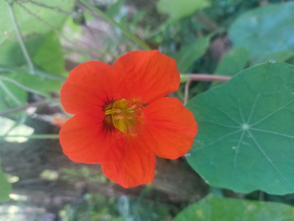

Hola, ¿qué hai trala cancela verde?
v29/08/2023
A Cancela Verde é unha explotación agraria familiar (no REAGA)
que está nun lugar onde sempre se traballou a terra, mesmiño na Coruña.
Témola xa aberta...
...a toda cor ;-)
- Na feira atópasnos así
 - ¡Feireando!

Namentres a continuación amosarémosvos algo do que xa hai tras dela :-)
Hai cero fitosanitarios, a de 2021 foi a primeira colleita que fixemos deste xeito e así seguimos...
Hai vontade de segui-los mellores criterios para unha producción integrada.
Hai dedicación e traballo, métodos tradicionáis, respecto ó medio
(mantemos o entorno limpo e bonito, prantamos alimento para os silvestres, hotéis de insectos, compostaxe, etc, etc...)
Hai selección das variedades máis resistentes e axeitadas ó entorno.
Hai excedentes do que nós mesmos consumimos, para poder, afortunadamente, compartir.
E hai un lote de cousas ás que lle facer fotos e que de seguido engadimos, ¡disfrutádeas!
...sempre hai algo que apañar
- aloe vera todo o ano

volta ó Inicio - e tamén os limóns

volta ó Inicio - loureiro e romeu, recenden

volta ó Inicio - O estío enxoito, o inverno húmido...
volta ó Inicio
...e cada tempada ven o seu
- teño paixón polas chaiotas

volta ó Inicio
Trala cancela verde aínda poderemos atopar moitas cousas bonitas....
- ¡ledicia de velas!

volta ó Inicio - ¡ledicia de velas!

volta ó Inicio - engaiolan

volta ó Inicio